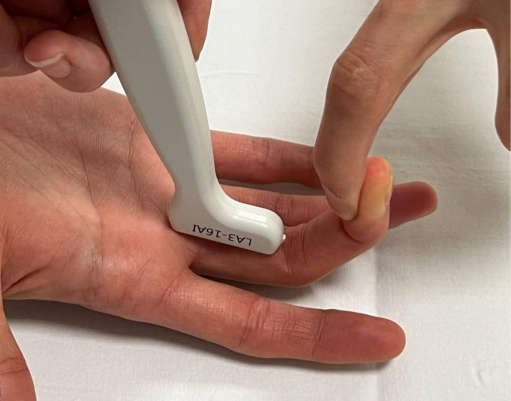
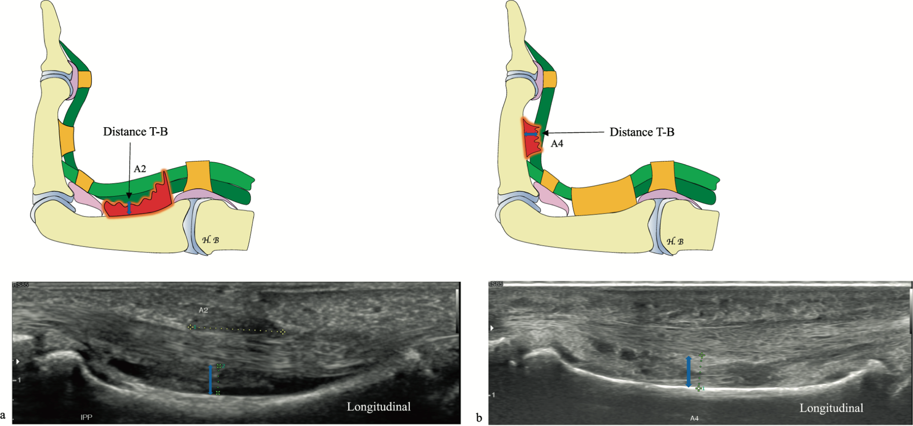

Respuesta clínica corta
¿Qué signo ecográfico ayuda más cuando la polea rota no se ve bien?
El aumento dinámico de la distancia entre tendón y hueso durante flexión contra resistencia, medido en la falange correspondiente.
Dato claveA2 y A4 · ecografía dinámica · umbrales variables entre estudios
La ecografía dinámica permite observar el desplazamiento del tendón y medir la distancia tendón-hueso bajo carga; es una herramienta útil, pero los umbrales publicados varían y no deben aplicarse como cortes absolutos sin integrar técnica, polea, posición y clínica.
Observado
Qué encontró y cómo interpretarlo
La revisión buscó en PubMed/MEDLINE, Scopus y Web of Science e incluyó estudios clínicos y cadavéricos, pero no informa selección por duplicado, evaluación formal del riesgo de sesgo ni síntesis cuantitativa.
La distancia tendón-hueso es el signo indirecto más útil para A2 y A4, aunque los límites citados varían desde alrededor de 1–2 mm en condiciones controladas hasta valores mayores en sujetos sanos.
La ecografía dinámica tiene una ventaja mecánica evidente: observa el arqueamiento durante carga. Esa plausibilidad no elimina la dependencia del operador ni la heterogeneidad entre protocolos.
Las afirmaciones sobre elección terapéutica proceden de literatura secundaria y no deben confundirse con evidencia comparativa de resultados.
Atlas del artículo
Imágenes para entender el procedimiento
Estas figuras proceden del artículo original y se reproducen con licencia abierta verificada. Se muestran por su utilidad anatómica o técnica, no como prueba aislada de diagnóstico o eficacia.

La posición combina 20° de flexión interfalángica proximal, 40° distal y flexión activa contra resistencia para explorar A2.
Cómo leerlaLa fotografía estandariza la maniobra, pero la fuerza aplicada no queda cuantificada y condiciona la distancia obtenida.
Bouredoucen H et al., figura 8 del artículo original · Fuente · Licencia CC BY.

El signo indirecto muestra separación tendón-hueso en A2 sobre falange proximal y en A4 sobre falange media durante resistencia.
Cómo leerlaLos casos ilustran lesiones seleccionadas; la imagen no establece un punto de corte universal ni sustituye comparación clínica y técnica.
Bouredoucen H et al., figura 9 del artículo original · Fuente · Licencia CC BY.
Procedimiento del artículo
Ecografía dinámica de las poleas A2, A3 y A4
La exploración combina visualización directa con signos indirectos. Para A2 y A4 se mide la separación tendón-hueso en eje largo durante flexión contra resistencia; para A3 se utiliza la distancia entre tendón y placa volar.
- Transductor
- Lineal de muy alta frecuencia, aproximadamente 15–18 MHz
- Planos
- Eje largo para medir separación y eje corto para anatomía y líquido
- Maniobra
- Flexión activa contra resistencia para provocar arqueamiento del tendón
- Comparación
- Dedo contralateral y misma posición cuando exista duda
- 01
Reconocer la polea normal
Se moviliza pasivamente el dedo y se explora en ambos planos, corrigiendo la inclinación para reducir artefactos en los bordes del tendón.
- Referencias
- Tendones flexores, falange, vaina sinovial y fina polea hipoecogénica adosada a la cara palmar.
- Lectura
- La visualización directa puede ser difícil por el grosor de 0,3–0,5 mm, sobre todo en poleas pequeñas.
- 02
Aplicar contraflexión para A2
El transductor se coloca sobre la falange proximal; la interfalángica proximal se flexiona unos 20° y la distal unos 40° mientras la persona flexiona contra resistencia.
- Referencias
- Diáfisis de la falange proximal, tendones flexores y espacio que aparece entre tendón y hueso.
- Lectura
- El arqueamiento aumenta la distancia tendón-hueso y puede hacer visible una lesión que en reposo pasa desapercibida.
- 03
Medir A2 y A4
En eje largo se mide perpendicularmente la separación en la porción media de la falange proximal para A2 y de la falange media para A4.
- Referencias
- Superficie ósea, cara profunda del tendón y líquido o hematoma interpuesto.
- Lectura
- Una distancia aumentada apoya lesión, pero los valores normales y patológicos se solapan entre protocolos.
- 04
Adaptar la medición para A3
A nivel de la interfalángica proximal se mide la distancia entre la superficie de la placa volar y la cara profunda del tendón flexor.
- Referencias
- Placa volar, tendón flexor y polea A3.
- Lectura
- La referencia cambia de hueso a placa volar porque A3 se inserta en esta estructura.
Procedimiento resumido a partir de los apartados de ecografía normal y poleas rotas. La revisión organiza estudios heterogéneos y no valida por sí misma un umbral diagnóstico universal.
Aplicabilidad
Qué significa clínicamente
Registrar ángulos, plano, localización exacta y tipo de resistencia mejora la comparabilidad entre exploraciones.
La ausencia de discontinuidad visible no excluye lesión aguda si edema y líquido dificultan ver la polea.
Comparar con el dedo contralateral puede ayudar, siempre que se mantengan idénticas posición y carga.
Cuando radiografía y ecografía no resuelven una pregunta clínicamente relevante, la revisión propone completar con resonancia.
Límite
Qué no permite afirmar
Es una revisión narrativa sin evaluación formal de calidad ni metaanálisis.
Los umbrales proceden de estudios con posiciones, cargas, poleas y poblaciones diferentes.
No cuantifica sensibilidad o especificidad agrupadas ni el impacto sobre decisiones clínicas.
La precisión depende de transductores de alta frecuencia y experiencia en estructuras submilimétricas.
Contexto
¿Se parece a tu paciente?
- Población estudiada
- La revisión integra estudios clínicos y cadavéricos sobre poleas flexoras de los dedos, especialmente lesiones traumáticas en escaladores; no aporta una cohorte propia ni una única población de validación.
- Diseño
- Revisión narrativa estructurada de anatomía, diagnóstico por imagen y manejo
- Resultado evaluado
- Descripción de signos ecográficos y criterios de medición para lesiones de poleas
Fuente primaria
Lee el estudio, no solo nuestro análisis
Bouredoucen H, Bouvet C, Taihi L, Laredo JD, Schöffl V. The climber's finger: imaging of finger flexor tendon pulley injuries. Eur J Radiol. 2026;198:112757. doi: 10.1016/j.ejrad.2026.112757
Responsabilidad editorial
Francisco José Extremera García
Fisioterapeuta colegiado ICPFA 4288 · Osteópata D.O.
Creador y responsable editorial de FisioLógico
- Última revisión
- Conflictos de interés
- Ninguno declarado.